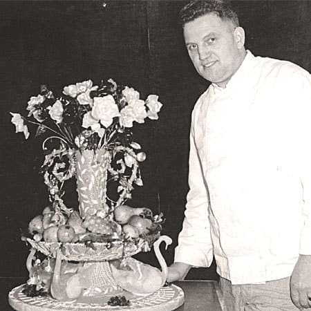

L'histoire de Pralus
C’est à Auguste Pralus que nous devons la maison Pralus. C’est à lui aussi que nous devons l’invention de la fameuse Praluline
. Cette savoureuse brioche aux pralines roses, ambassadrice de la Maison Pralus depuis 1955, l’a rendu célèbre en France comme à l’étranger !
Né à Mars, dans la Loire, en 1920, Auguste Pralus a ouvert sa pâtisserie à Roanne en 1948, avec son épouse Noëlie. Ce talentueux pâtissier obtiendra en 1955 le titre très envié de Meilleur Ouvrier de France, qu’il doit à sa rigueur et à son exigence de qualité. Il crée la même année une brioche aux praline roses: Pralus + Praline, elle sera baptisée Praluline !
quitté les premières loges des magasins Pralus.
Souvent imitée, mais jamais égalée ! A-t-on coutume de dire…
